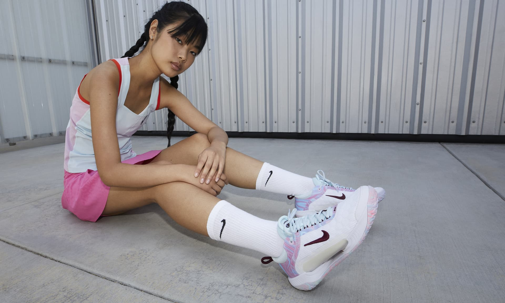
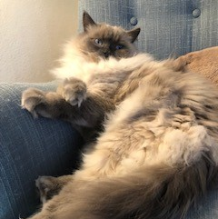

What are you doing this weekend? I'm excited to be playing in a mixed-doubles tennis tournament Saturday night and then I have another match on Sunday morning. Of course I will be spending plenty of time with my three sweet furbabies, which surely will include lots snuggling on the couch while I recover from all of my hard work. Maybe I'll even bake something delicious to eat while I'm lounging. Hope you have a good one, and here are a few links from around the web...
Tennis things
These low-profile tennis shoes have helped prevent me from rolling an ankle while I play and it doesn't hurt that they're also cute. I have them in two colors and plan on getting another pair (or two) when they're on sale.
Going makeup-free is preferable during any sweaty activity, but sometimes you just want to be extra.
I used to never wear dresses while playing tennis- they just seemed too precious. My kit has always been a pair of shorts or a skirt and top. Chalk it up to evolving taste (or maybe just laziness, since realizing that wearing a dress means that I don't have to rummage through the laundry for a matching shirt and skirt), I've had my eye on this dress.
Looking forward to spending time with family in March along with our (almost) annual trip to watch professional tennis at Indian Wells. The BNP Paribas Open is the 5th largest in the world (behind the Grand Slams) and boasts sunny weather against a gorgeous backdrop. Although the tournament has gotten larger and more crowded over the years, we still love to go and always have a great time.

Other things
Warmer weather means it's time for a wardrobe freshen-up. While I've been living in these boots over fall and winter, I'm looking forward to switching to some lighter trainers that would look great with this shirt dress or this version.
Given my love of all things pink, this just might be the perfect new everyday spring bag. For a bit of an upgrade, this is a nice option.
Stumbled across this cutie the other day.
Snack things
Love cookie dough, but not quite sure about how I feel about this. Would you try it?
Since diving into the world of Korean snacks, I've discovered a few favorites. These taste like Bugles and Kettle Corn had a baby snack that somehow turned out to be crispy and fluffy at the same time. Same addictive texture, but chocolatey and churro-ey. If you're looking for something with a little more substance, my favorite ramen, which can now be found at Target(!!), is sufficiently filling, especially when topped with a slice of American cheese and a soft-boiled egg.

Speaking of Korean snacks, I can't wait for this place to open up in my neighborhood.
Cat things
You know I couldn't get away without mentioning at least one of my Ragdoll cats. Our youngest, Bowie, loves to eat. (Hmm, sounds familiar.) With Chewy autoship, I know that we will always have his prescription food on hand before it runs out. That's one less stress for me, and it has really been a game-changer to be able to order it online and schedule delivery. I may or may not be telling the truth by saying that Bowie gets excited when he sees the Chewy box sitting at the front door.
And for all of you doubters, I think this means that I am loved very much.